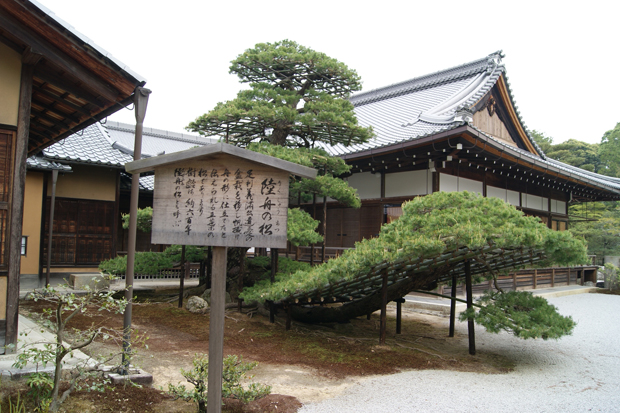
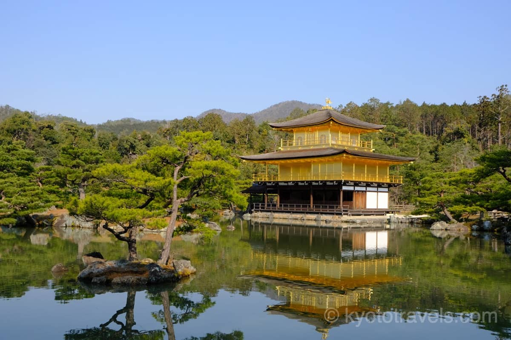
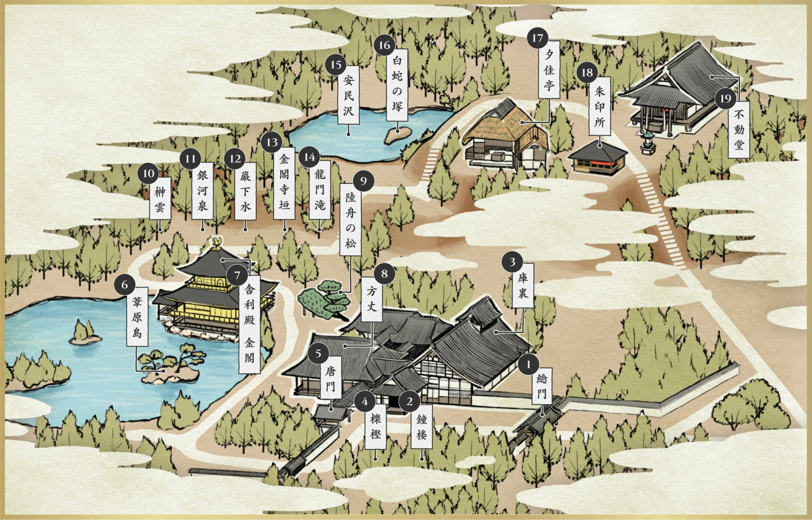

みみ説 金閣寺
『北山鹿苑禅寺』
室町幕府の3代将軍・足利義満が建立、1408年に完成しました。
「舎利殿」が、豪華な金色に輝くことから、古くから金閣寺と呼ばれてきたようです。
1994年世界遺産に登録されました。近年では海外からの観光客も増え2017年の観光客数は、約352万7000人になりました。
金閣の隠された見所は
金閣が浮かぶ池に沿って進むと右手に大きな松の姿があります。
この松は「陸舟(りくしゅう)の松」と呼ばれるその松は、その名の通り舟の形をしています。
義満の盆栽を移植したと伝わる松です。
見た目では小さく見えても樹齢600年を越す伝統のある松です。
音声を再生する


他にも見所あります 周辺地図

近くの観光地
他の紹介しているURLを貼る